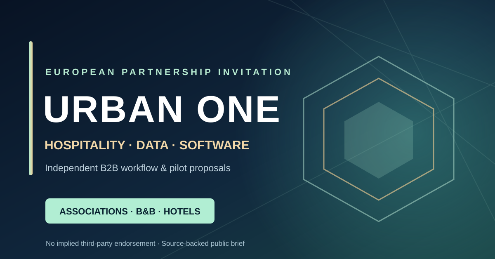

Original wide banner
728 × 90 px vector
Website/newsletter banner. Reuse only under the stated editorial usage conditions.
A voluntary European editorial and cooperation proposal for B&B networks, hotel federations, tourism publications and qualified B2B partners. No official association partnership or provider production integration is claimed.
Website/newsletter banner. Reuse only under the stated editorial usage conditions.
Independent project artwork for association editor review, without third-party logos.

European umbrella and national organization gateways. A research list is not a partner or contact list.
Optional educational pilot, editorial story and collaboration discussion. No member data is requested.
Fact-checked-style source release ready for editorial review and local verification. Not a published third-party article.
Original assets, attribution rules, no implied OpenAI, Booking.com, InfoCert, Fabrick or trade-association endorsement.
URBAN ONE is an independent software initiative. Actual Booking/PMS reservation sync, Fabrick PSD2 AIS/PIS, qualified InfoCert e-signature and Gintitic credit/legal execution are not represented as live. No unconditional access to any hotel, payment or EU property record is promised. Enquiries are non-binding; any paid service requires a separate contract, lawful processing and payment verification.
Our hospitality-specific pages invite operators to request a written scope and demonstration, not to sign contracts or authorize charges through this public press page.
Hospitality English · Italiano · Deutsch · Français · Español
Would a short, correctly attributed, non-sponsored article or a synthetic-data demo be relevant to your members or readers? Please ask your editor or authorized association representative to contact us. We will not request member lists, guest records or access to accounts.